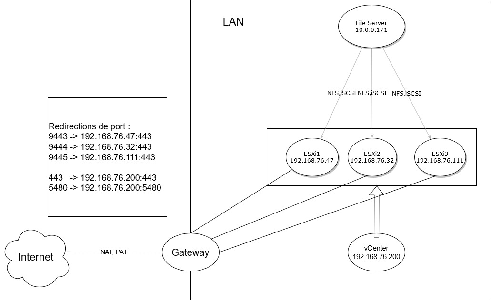
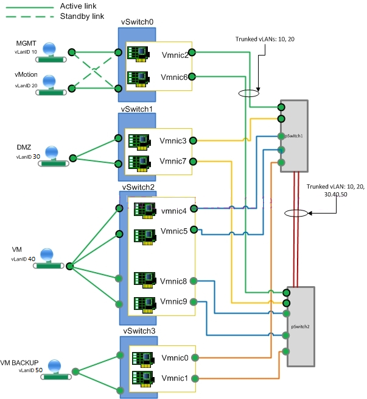
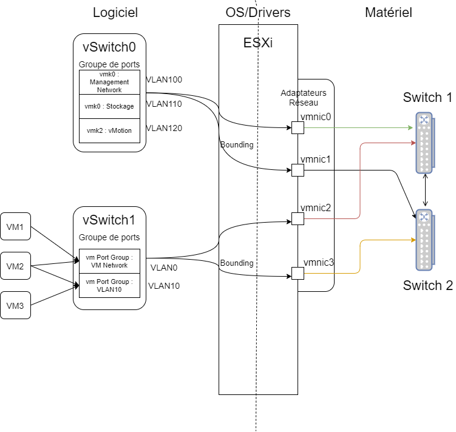
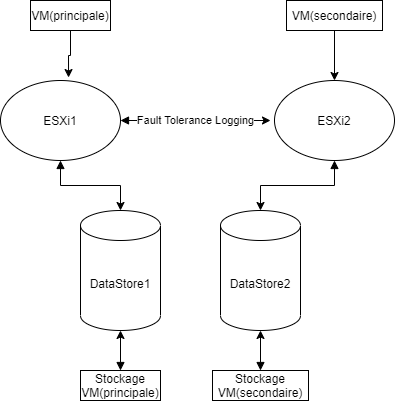
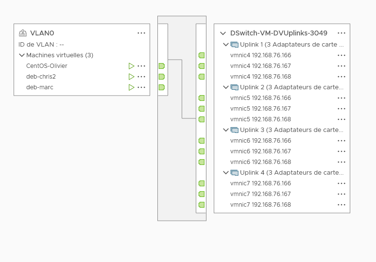
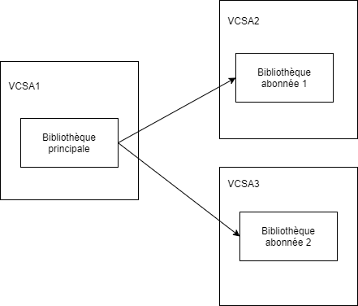

2021-07-05
David CLÉMENT
09.72.37.73.73 - 07.61.04.94.46
Formation de 35H du 5 au 9 Juillet 2021.

Documentation sur HedgeDoc: https://hedgedoc.dawan.fr/s/yXS0kTRqJ#
Site officiel: https://www.vmware.com/fr/products/vsphere.html
Documentations sous pdf: Docs PDFs
Eco-système des produits de virtualisation. - Hyperviseurs : ESXi (Electric Sky internal à partir de la version 5), ESX (avant la v5), VMVisor. OS permettant de faire tourner les VMs. - vCenter : gestionnaire d’infra vSphere (fonctionnalités: agrégation/centralisation des configurations des ESXi, clone, modèle, librairie, HA, DRS, VDS, …) - Clients : - lourd windows : n’existe plus - web client flash : deprecated - web client html5

Service Hybrid Cloud : gestion centralisée infra locale et Cloud public
…
ESXi Image Customizer -> injection des fichiers unattend, drivers (vib)
Boot via PXE
Auto Deploy Service -> déploiement automatisé (Enterprise Plus et VDS Switch Distribué)
-> HCL VMWare : Hardware Compatibility List (https://www.vmware.com/resources/compatibility/search.php)
Fonctionnalités: - Configuration du réseau de gestion - SSH et le shell (esxtop, esxcli) - Logs
Raccourcis clavier: - F2 : paramètres - F12 : reboot/shutdown - ctrl+alt+F1 : shell - ctrl+alt+F2 : paramètres - ctrl+alt+F11 : logs
vmnic : interface réseau physique de l’ESXi vSwitch : interface entre les vmnic (“uplinks” du vSwitch, adaptateur réseau physique de l’hyperviseur) et les vmKernel et les groupes de ports de VMs. 2 types de switchs virtuels: - VSS : virtual Standard Switch (VLAN, formation de trafic en sortie) - VDS : virtual Distributed Switch(édition Entreprise Plus, filtrage/balisage, port mirroring, formation de trafic en in/out, PVLAN, NetFlow Collector, LACP, …)
vmKernel : flux réseaux internes des hyperviseurs vm Port Group : groupe de ports des VMs, possède un nom unique et doit être identique sur l’ensemble des hyperviseurs d’un cluster.
Exemple 1: 
Exemple 2: 
MTU : Maximum Transmission Unit => taille des trames Ethernet. Permet de diminuer les commutations au niveau des switchs. Jumbo Frame : augmenter la taille des trames Ethernet MTU 9000 octets ou +
Découverte de liaison : utilisation du protocole CDP ou LLDP pour établir une cartographie du réseau pour mieux au panne réseau.
Sécurité: - mode de promiscuité : fonctionnement en mode Hub - modification d’adresse MAC : autorise la VM à modifier à modifier son adresse MAC - transmission forgée : autorise une VM à émettre un trafic avec une autre MAC que la sienne
Association de cartes réseau: principe de répartition des VM sur les Nic physiques. 3 algos de répartition: round robin en fonction de l’ip ou de la MAC ou du port du switch Et 1 algo de failover: basculement explicite (utilisation de la 1ère interface et bascule sur la 2ème si pb)
Détection de basculement: déterminer l’état d’un lien réseau Utilisation du Beacon probing(“Balise seulement”, broadcast sur le LAN entre les ESXi sur le management network) possible pour mieux déterminer si le lien actif
Restauration automatique: si un lien est “Up” après une phase de panne alors il est remis dans le round robin
Formation de trafic: Fixer une bande passante maximum en sortie (VSS ou VDS) ou en entrée (VDS).
Flux réseaux internes des hyperviseurs:
Possibilité d’utiliser des piles TCP/IP spécifiques pour ces vmKernels. Pile TCP/IP : configuration DNS et passerelle. Et optimisation des communications de certains vmKernel : vMotion et Provisionnement (stockage, pré-requis baie de stockage compatible VAAI)
VMFS:
Plus d’info: https://syskb.com/san-ou-nas-quelle-est-la-difference/
NTP ou PTP(nouveauté de la v7)
PCI PassThrough : 1 matériel alloué à 1 VM SR-IOV (Single Root-Input Output Virtualization) : 1 matériel alloué à n VM
RBAC : Role Based Access Control Role = ensemble d’opération
Par défaut, principe de l’émulation/virtualisation complète. Goulots d’étranglement:
Format d’échange de VM : Appliance virtuelle
Vmware Converter : P2V ou V2V, conversion de machines physiques ou virtuelles
Compatibilité de la VM : Version du matériel de la VM. Prendre la dernière version par défaut sauf si volonté d’export vers des ESXi plus ancien.
OS : préselection du matériel virtuel le plus adapté à l’OS de la VM.
Linux : Possibilité de se passer de LVM. 1 disque virtuel = 1 point de montage.
Bonnes pratiques:
Exemple pour une VM Windows:
Meilleure intégration de l’OS Guest au sein de l’Hyperviseur
Windows : Installation en mode graphique
Linux : Installer le paquet de la distrib “open-vm-tools” Ou git clone https://github.com/vmware/open-vm-tools.git
Documentation pour la compilation : https://github.com/vmware/open-vm-tools
apt-get install gcc make linux-headers-\$(uname -r) nettools dns-utilsyum install gcc perl linux-headers-$(uname -r)./vmware-install.pl1 VM = 1 dossier de même nom
Fichiers de base:
Fichiers volatiles:
Snapshots:
Fonctionnalités de clusterisation:
Personnalisation des différents types d’objets de l’inventaire.
=> exemples : - propriétaire, service (balises) - date de création (attribut personnalisé)
Permet de privilégier certaines VMs. Utile si on a de la surallocation sur une ressource de l’ESXi (CPU, RAM, Disque).
3 mécanismes : - pondération : notion de parts sur RAM, CPU et stockage - réservation : allocation définitive d’une partie de la ressource concernée sur RAM et CPU (machine critique) - limitation : bridage sur la ressource concernée sur RAM, CPU et stockage
-> pondération : utilisée uniquement lors de la saturation(>90%) de la ressource concernée
Objets pour gérer les allocations: - pool de ressources : conteneur de VMs - vAPP : méta-VM (pseudo vm constituée de plusieurs VMs, pré-requis : cluster DRS)
Création, choix des fonctionnalités de clustering: - DRS : répartition de charge (Distributed Resource Scheduler) - vSphere HA : Redémarrage automatisé de VM en cas de défaillance d’un ESXi (High Avaibility) - vSAN : virtual SAN, stockage hyper-convergé -> stockage interne aux ESXi, cluster de stockage tolérant au panne
Licence : à partir d’Essential Plus Pré-requis : - hyperviseurs identiques recommandés - stockage partagé entre les HV - 2 interfaces réseau sur le vmKernel de Gestion
Redémarrage automatisé de VM en cas de défaillance d’ESXi ou de la VM elle-même.
Les VMs sont redémarrées par le maître du cluster sur l’ensemble des ESXi restants.
Maître est désigné par : - le nombre le + important de datastore monté - l’identifiant de l’ESXi, premier par ordre alphab.
Types de panne :
- Panne de l’hôte - Isolation d’hôte : perte du réseau heartbeat entre les esxi sur le vmkernel de gestion (à partir de 3 HV) - Perte de stockage (système de heartbeat entre esxi et les datastores) - PDL : nfs/iscsi san, Permanent Device Loss - APD : fc multipathing, All Path Down
:arrow_right: permet d’éviter la création de monstre à 2 têtes :arrow_right: on arrête les vms sur l’hôte isolé
Contrôle d’admission : Contrôle des ressources CPU et RAM réservées sur chaque HV pour assurer les bascules.
VMs doivent être indépendantes par rapport au matériel de l’esxi, éviter : - usb, floppy, cd/dvd - pci-passtrough - série/parallèle physique - pas de stockage DAS
Pré-requis ESXi : - activer le vmkernel avec le service Fault Tolerance Logging - vswitch séparé avec adaptateurs réseau physiques dédiés avec minimum 10Gb/s - HA activée (utilisée pour le redémarrage d’une VM secondaire en cas de défaillance d’un esxi)utilisée pour le redémarrage d’une VM secondaire en cas de défaillance d’un esxi)
Pré-requis VM : - 2 vCPU max (licence standard), 4 vCPU max(licence Enterprise) - EFI pas pris en charge - CPU et RAM hotplug non pris en charge - Verrouillage de la RAM - Disque dur gonflé (provis. statique) - Virtualisation CPU/MMU matérielle - pas de périphériques : USB, série, parallèle, RDM, pci-passthrough ou sr-iov, contrôleur NVMe - entre 1 (1Gb/s sur le vmk FT) et 4 vCPU (4Gb/s)
:warning: Stockage dupliqué sur un autre datastore pour protéger la VM de la perte d’un stockage

Limites : - 1 à 4 vCPU par VM (2 max pour l’édition standard et 4 pour Entreprise Plus) - 4 VM en FT / hôte - 8 vCPU en FT / hôte - 98 VM en FT / cluster - 256 vCPU en FT / cluster - plus de snapshot possible sur les VMs
Pré-requis ESXi : - vMotion activé - Activer l’EVC si besoin (Enhanced vMotion Compatibility) -> sert à masquer les jeux d’instructions CPU non compatibles entre ESXi (inutile si les CPU sont homogènes). Garantie de déplacement à chaud de VM entre HV. Surtout utile pour le DRS, uniquement pour des plateformes de virtu hétérogènes en terme de CPU.
Pré-requis VM : - pas de périphériques : usb, série/parallèle, pci pass-through, floppy/cd, RDM
Règles de DRS : - affinité VM-VM et VM-Hôte - anti-affinité VM-VM et VM-Hôte
Fonctionnalités liées : - ProActive HA : évacuation automatisée de VM en fonction de l’état de santé des HV - Predictive DRS : option pour faciliter les déploiements avec vROp (vRealize Operation Management) - SDRS : Storage DRS, répartition automatisée sur les datastores - DPM : Distributed Power Management, mise en veille/allumage automatisé d’hyperviseurs
Objets utilisables au sein d’un cluster avec DRS :
- pool de ressource - vApp
RVTools : https://www.robware.net/rvtools/ vCheck : https://vcheck.report/
Intérêt : Apporter de la scalabilité (évolutivité simplifiée) aux infra de virtu.
vSphere Distributed Switch : configuration centralisée de switch virtuel sur un ensemble d’hyperviseurs
fonctionnalités supplémentaires : pvlan, pool de ressource, mirroring de port, traffic shaping en entrée et en sortie, filtrage/balisage, association statique sur port de switch, netflow/netflow-collector …

Schéma
Problèmes de sécurité : https://www.vmware.com/in/security/advisories.html
Backup du vcenter, des confs des esxi(VSS, VM Network, VM Kernel si pas de VDS, certif SSL si modifié), VM.
vCenter : - backup complet de la VM - ou backup de la config : https://vcsa:5480 (ftp, sftp, http, …)
ESXi: - via PowerCLI - via shell ESXi : vicfg-cfgbackup - via VMA : vicfg-cfgbackup (vSphere Management Assistant)
Installation de la PowerCLI: - powershell en tant qu’admin:
Install-Module VMWare.PowerCLIConnexion sur esxi:
Connect-VIServer 192.168.76.17 -Forceou sur vcenter:
Connect-VIServer vcsa -ForceBackup:
# depuis un hyperviseur
Get-VMHostFirmware -BackupConfiguration -DestinationPath c:\users\admin\
# depuis le vcenter : VMHost indique l'hyperviseur à sauvegarder
Get-VMHostFirmware -VMHost 192.168.76.17 -DestinationPath c:\temp\Restore : Mettre en mode maintenance l’ESXi (reboot requis)
Set-VMHostFirmware -SourcePath configBundle-192.168.76.17.tgz -VMHost 192.168.75.90 -HostUser root -HostPassword 'F0rmation!' -Restore -ForceLe paramètre ‘-Force’ permet de restaurer une sauvegarde même si l’UUID de l’ESXi ne correspond pas.
Mise en conformité des configurations des ESXi au sein des clusters (Licence Enterprise Plus).
Mise en place: * Construction d’un profil à partir d’un ESXi déjà configuré * Attacher le profil sur un ESXi/Cluster * Personnalisation des ESXi (configuration variable entre les hyperviseurs : ip, adresse mac, …) * Valider la conformité et faire de la correction automatique
Licence Standard
Stocker et gérer les modèles de déploiement, OVA/OVF ISO.

SDK pour Java, .Net, …
Ressources pour outils DevOps : Ansible, Puppet, DSC, … —–> assurance d’idempotence
Standard :
Enterpise :
Ici c’est moi qui écrit !